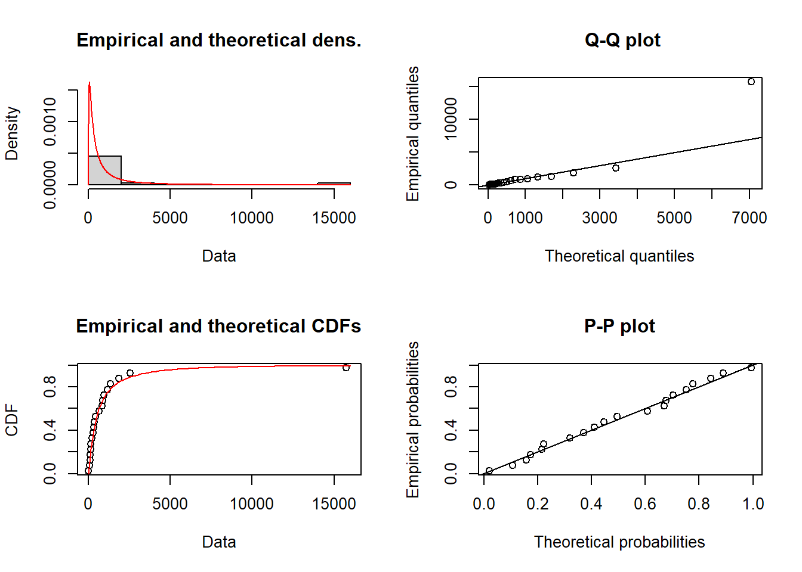

Chapter 6 参数估计和统计推断
We have finished a nice book.
6.1 极大似然估计
极大似然估计（MLE）是常用的一种估计参数的方法，将观察到的事物的概率或可能性最大化。假设一组数据包含了 n 个事件 \(A_1,...,A_n\), \(A_j\) 表示从随机变量 \(X_j\) 中第j次观察到的事件，则似然函数的定义为：
\[ L(\theta)=\prod_{j=1}^n \Pr(X_j \in A_j|\theta) \] 随机变量 \(X_j\) 中未知参数 \(\theta\) 的估计值求解步骤可分为以下几步：
1.根据观测值写出有关待估参数 \(\theta\) 的似然函数 \(L(\theta)\);
2.似然函数取对数 \(\ell(\theta)\) 得到对数似然函数;
3.求解使对数似然函数取最大值时对应的 \(\theta\) 的估计值，一般令对数似然函数的一阶导为0求解。
例题： 已知随机变量服从指数分布，从中得到一个样本为：27，82，115，126，155，161，243，294，340，384，457，680，855，877，974，1193，1340，1884，2558，15743，求该指数分布的参数 \(\theta\) 最大似然估计值。
答案：
极大似然函数及其取对数为： \[\begin{align*} L(\theta)&=\prod_{j=1}^n f_{X_j}(x_j|\theta),\\ \ell(\theta)&=\sum_{j=1}^n \log f_{X_j}(x_j|\theta). \end{align*}\]
代入指数分布的概率密度函数，可得: \[\hat{\theta}=\frac {\sum_{j=1}^{20} x_i}{20}=1424.4\]
6.2 方差和置信区间
极大似然估计满足以下两条性质：
1.当\(n \to \infty\), \(L'(\theta)=0\) 有解的概率趋近1；
2.当 \(n \to \infty\), 极大似然估计量\(\hat{\theta}_n\)的分布收敛于均值为 \(\theta\) ，方差满足\(I(\theta) \text{Var}(\hat{\theta}_n) \to 1\)的正态分布, 其中：
\[\begin{align*} I(\theta)&=-n\mathbb{E}\left[\frac{\partial^2}{\partial \theta^2}\ln f(X;\theta)\right]\\ &=n\mathbb{E}\left[\left(\frac{\partial}{\partial \theta}\ln f(X;\theta)\right)^2\right] \end{align*}\]
我们可以认为\([I(\theta)]^{-1}\) 是\(\text{Var}(\hat{\theta}_n)\)的近似估计，\(I(\theta)\) 被称为费雪信息（Fisher’s information），定义如下：
\[ I(\theta)=-\mathbb{E}\left[\frac{\partial^2}{\partial \theta^2}\ell(\theta)\right] =\mathbb{E}\left[\left(\frac{\partial}{\partial \theta}\ell(\theta)\right)^2\right]. \] 当待估参数不止一个时，我们引入\((r, s)\)阶的海森矩阵（Hessian matrix）：
\[ H(\theta)_{rs}=\frac{\partial^2}{\partial \theta_r \theta_s}\ell(\theta) \] 此时费雪信息阵（Fisher information matrix）为：
\[ I(\theta)=-\mathbb{E}[H(\theta)]=-\mathbb{E}\left[\frac{\partial^2}{\partial \theta_r \theta_s}\ell(\theta)\right]=\mathbb{E}\left[\left(\frac{\partial}{\partial \theta}\ell(\theta_r)\right)\left(\frac{\partial}{\partial \theta}\ell(\theta_s)\right)\right]. \]
大部分时候，我们感兴趣的不是某个参数 \(\hat{\theta}\)，而是与未知参数有关的函数 \(g(\hat{\theta})\)，比如，为了估计服从对数正态分布的某个总体的均值，我们需要估计 \(\exp(\hat{\mu} + \hat{\sigma}^2/2)\) ，而不是简单的参数 \(\hat{\theta}\) 和 \(\hat{\sigma}\)。对于这种情况，我们需要了解 delta method：
假设\(\hat{\theta}\) 是 \(\theta\) 的估计量，服从均值为 \(\theta\) ，方差为 \(\sigma^2/n\) 的渐进正态分布，那么我们可以认为 \(g(\hat{\theta})\) 也服从渐进正态分布，其均值和方差分别为： \[\mathbb{E}[g(\hat{\theta})]=g(\theta)\] \[ \mathbb{Var}[g(\hat{\theta})]={g'( \theta )}^2 {\sigma}^2/n \] \(\theta\) 的置信区间为 \(\hat{\theta} ± z_{\alpha/2}\sigma\)，其中 \(\alpha\) 为置信度， \(\sigma\) 为估计的标准差。
例题：
已知随机变量服从对数正态分布，从中得到一个样本为：27，82，115，126，155，161，243，294，340，384，457，680，855，877，974，1193，1340，1884，2558，15743，求该对数正态分布的MLE的协方差矩阵以及参数 \(\mu，\sigma\) 的95%的置信区间。
答案：
对数正态分布的极大似然函数及其取对数为：
\[\begin{align*} L(\mu,\sigma)&=\prod_{j=1}^{n}\frac{1}{x_j\sigma\sqrt{2\pi}}\exp\left[-\frac{(\ln x_j - \mu)^2}{2\sigma^2} \right],\\ \ell(\mu,\sigma)&=\sum_{j=1}^{n}\left[ -\ln x_j - \ln \sigma - \frac{1}{2}\ln(2\pi)-\frac{1}{2}\left( \frac{\ln x_j - \mu}{\sigma} \right)^2 \right]. \end{align*}\]
对未知参数 \(\mu，\sigma\) 求一阶导为：
\[\begin{align*} \frac{\partial \ell}{\partial \mu}&=\sum_{j=1}^{n} \frac{\ln x_j - \mu}{\sigma^2},\\ \frac{\partial \ell}{\partial \sigma}&=-\frac{n}{\sigma}+ \sum_{j=1}^{n} \frac{(\ln x_j - \mu)^2}{\sigma^3} \end{align*}\]
对未知参数 \(\mu，\sigma\) 求二阶导为：
\[\begin{align*} \frac{\partial^2 \ell}{\partial \mu^2}&=-\frac{n}{\sigma^2},\\ \frac{\partial^2 \ell}{\partial \mu \partial \sigma}&= -2\sum_{j=1}^{n}\frac{(\ln x_j - \mu)}{\sigma^3} ,\\ \frac{\partial^2 \ell}{\partial \sigma^2}&=\frac{n}{\sigma^2} - 3\sum_{j=1}^{n}\frac{(\ln x_j - \mu)^2}{\sigma^4}. \end{align*}\]
信息矩阵为： \[ I(\mu,\sigma)= \left[\begin{matrix} \frac{-n}{\sigma^2} & 0 \\ 0 & -\frac{2n}{\sigma^2} \end{matrix} \right] \] 协方差矩阵为：
\[ \text{Cov}(\mu,\sigma)= \left[\begin{matrix} \frac{\sigma^2}{n} & 0 \\ 0 & \frac{\sigma^2}{2n} \end{matrix} \right] \]
根据样本求得： \(\hat{\mu} = 6.1379\) ， \(\hat{\sigma}_2 = 1.9305\)， \(\sigma = 1.3894\).
\[ \widehat{\text{Var}}(\hat{\mu},\hat{\sigma})= \left[\begin{matrix} 0.0965 & 0\\ 0&0.0483 \end{matrix} \right]. \]
置信区间为：
\[\begin{align*} \mu &\quad 6.1379 \pm 1.96(0.0965)^{1/2}=6.1379 \pm 0.6089,\\ \sigma & \quad 1.3894 \pm 1.96(0.0483)^{1/2}=1.3894 \pm 0.4308. \end{align*}\]
6.3 AIC和BIC
对数似然函数的值随着模型中参数数目的增加而增加，但增加模型中未知参数的个数会提高模型的复杂度，所以除非增加参数能显著增加对数似然函数值，否则我们不考虑给模型增加参数个数。为了使含有不同个数的未知参数的模型具有可比性，我们对参数的对数似然进行惩罚，两种常用的衡量指标为AIC和BIC。
对于样本量为n，模型参数个数为k，似然函数为L的赤池信息准则（AIC）和贝叶斯信息准则（BIC）和的计算公式如下： \[AIC = 2k -2ln(L)\] \[BIC = k ln(n)-2ln(L)\] 其中，BIC的惩罚项比AIC大，考虑了样本个数，样本数量多时可以防止模型精度过高造成的模型复杂程度过高。通常选取AIC或BIC最小的模型为最优模型。
6.4 R语言练习
载入数据集：
# read the data set
x <- c(27, 82, 115, 126, 155, 161, 243, 294, 340, 384,
457, 680, 855, 877, 974, 1193, 1340, 1884, 2558, 15743)方法一：使用optim函数
# 1. 构建对数正态分布的对数似然函数
LLlognormal <- function(x, pars){
mu <- pars[1]
sigma <- pars[2]
# the log-likelihood function for each observations
loglike <- dlnorm(x, meanlog = mu, sdlog = sigma, log = T)
LL <- sum(loglike)
return(LL)
}
# 2. 用optim 函数估计参数值
mlognomal <- optim(par = c(1, 2), # 初始值
fn = LLlognormal, # 对数似然函数
x = x, # 样本观测值
hessian = T, # 是否输出 Hessian 矩阵
method = c("Nelder-Mead"),
control = list(fnscale = -1, # -1 表示最大化；1 表示最小化
maxit = 100000) # 最大迭代次数
)
estimates <- mlognomal$par # 参数估计值
mu.est <- estimates[1]
sigma.est <- estimates[2]
Hessian <- mlognomal$hessian # Hessian矩阵
var.est <- diag(solve(-Hessian)) # 估计量的方差
se.est <- var.est^(0.5) # 标准误
results <- cbind(estimates,
se.est,
upper = estimates + 1.96*se.est, # 置信区间上界
lower = estimates - 1.96*se.est) # 置信区间下界
round(results, 3)## estimates se.est upper lower
## [1,] 6.139 0.311 6.748 5.530
## [2,] 1.390 0.220 1.820 0.959运用 Delta method 估计对数正态分布的期望的方差：
# g(\theta)的方程
g <- exp(mu.est + 0.5*sigma.est^2)
# g(\theta)的一阶导
g_dev <- c(exp(mu.est + 0.5*sigma.est^2), sigma.est*exp(mu.est + 0.5*sigma.est^2))
Cov <- solve(-Hessian) # the covariance-variance matrix
var.mean <- t(g_dev)%*%Cov%*%(g_dev)
# 均值的渐进方差
var.mean## [,1]
## [1,] 281482.2# 均值的置信区间
c(g - 1.96*var.mean^0.5, g + 1.96*var.mean^0.5)## [1] 177.3701 2257.1219方法二：使用fitdistrplus包
library(fitdistrplus)## 载入需要的程辑包：MASS## 载入需要的程辑包：survivalmlognomal2 <- fitdistrplus::fitdist(data = x,
distr = 'lnorm',
method = 'mle',
start = list(meanlog = 6, sdlog = 1)
)## $start.arg
## $start.arg$meanlog
## [1] 6
##
## $start.arg$sdlog
## [1] 1
##
##
## $fix.arg
## NULLmlognomal2$estimate # 估计值## meanlog sdlog
## 6.138143 1.389547mlognomal2$sd # 标准误## meanlog sdlog
## 0.3107121 0.2197389mlognomal2$vcov # 协方差矩阵## meanlog sdlog
## meanlog 9.654200e-02 1.843291e-05
## sdlog 1.843291e-05 4.828517e-02mlognomal2## Fitting of the distribution ' lnorm ' by maximum likelihood
## Parameters:
## estimate Std. Error
## meanlog 6.138143 0.3107121
## sdlog 1.389547 0.2197389plot(mlognomal2)